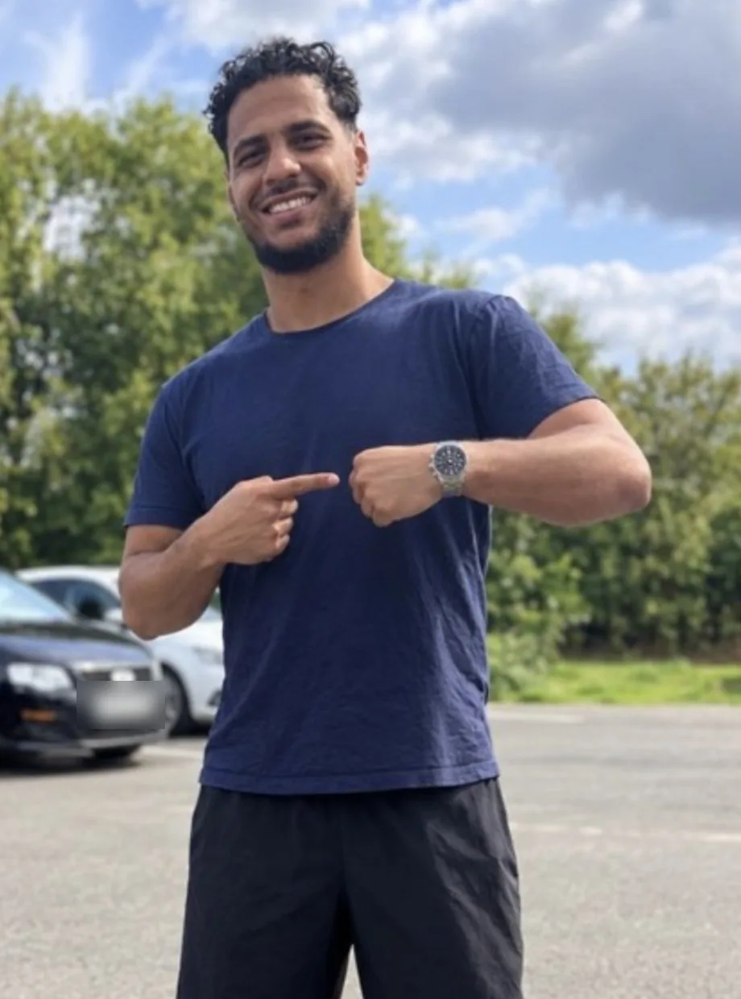

Golden goal row, lights out, one suspension
Ali Awil and Mo Bouch light up their debuts as the sides share six games, 3–3. Then Sudz turns the lights off. The fallout has split the club.

A six-game classic
Bibs and Non-Bibs traded blows from the first whistle in a dramatic 3–3 split in games that neither side deserved to lose. Some of the goals belong in a highlights reel.
Debuts to remember
The paperwork wait is over. Ali Awil walked out for his first appearance and played like a man who had been here for years. Odemwingie 2.0 is no longer a nickname. It is a warning. At the other end, Mo Bouch was a Rolls-Royce at centre-back: smooth, unhurried and impossible to get past. Two debuts, two statements. Expect a tug-of-war at team selection next week.
Lights out
With five minutes to go and the sides deadlocked at 3–3, a few club members on the sideline demanded golden goal. Nobody on the pitch had agreed to it. Chaos followed.
Then came the crash-out. Last week's warning about the Grove trio proved accurate. In a petulant act, Sudz turned off the lights, leaving both teams standing in the dark. The bomb experts could not defuse this one.
After a good night's sleep, Sudz has apologised and accepted his suspension. That is not the end of it. A rift has opened in the dressing room. Luqman and Adam O believe the punishment was far too soft. Sources close to the pair say they want his head on a stick.
Sheikh Ahmed Milky has stepped in to restore order. Sudz will train alone this week, away from the group, to let tempers cool. He is expected in the stands for next week's session.

“They want his head on a stick.”
Line-upsTEAM SHEETS · THURSDAY NIGHT FOOTBALL
| B | Bibs | NB | Non-Bibs |
|---|---|---|---|
| 1 | Shamz | 1 | Mo Bouch DEBUT |
| 2 | TT | 2 | Ruislip |
| 3 | Sully | 3 | PB |
| 4 | Hanad Southall | 4 | AF |
| 5 | Sudz | 5 | Luqman |
| 6 | Hanad Grove | 6 | Yahya |
| 7 | Dualeh | 7 | Hamza G |
| 8 | Ragz | 8 | Ali Awil DEBUT |